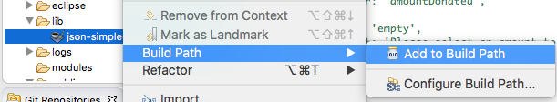
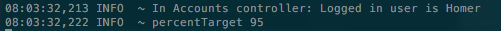
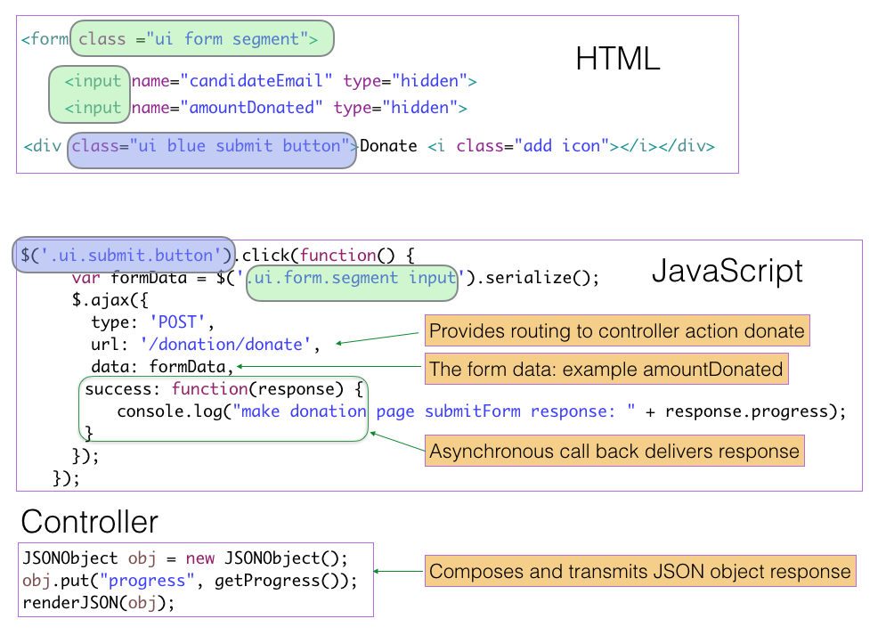

Asynchronous JavaScript & XML. Used to manage transmission of data between client (web) and server. The ajax operation takes place in the background. Facilitates updates of targetted areas on page without requirement to refresh entire page.
Download an archive of the Donation web app from this location.
Expand the archive into your workspace and cd into the project. The project name is donation-ajax-demo.
Run the command:
play eclipsifyRun the app:
play runLog in with these credentials:
homer@simpson.com
secretMake a donation. Observe how the entire screen refreshes once the donate button is pressed.
The purpose of this lab is to introduce changes, applying ajax, so as to eliminate this screen refresh and its annoying flicker.
The files requiring refactoring are:
app/controllers/DonationController.java
app/views/DonationController.html
public/javascripts/donate.js
public/javascripts/map.jsBefore embarking on the refactoring, let's reflect on the process that exists (i.e. without ajax).
# Donation page
GET /donation DonationController.indexpublic static void index()
{
...
...
render(user, candidates);
}<form class="ui form" action="/donation/donate" method="POST">
...
...
</form># Extract from roots file
POST /donation/donate DonationController.donate public static void donate(long amountDonated, String methodDonated, String candidateEmail)
{
// Perform database transactions.
// Invoke index(): this causes a page refresh
index();
}In the following steps we shall explain how to refactor the application to submit the data using ajax and thereby avoid the full page refresh that occurs as a result of DonationController.index being invoked at the conclusion of the DonationController.donate method.
What we require is an asynchronous call to be made once the submit button is pressed. This call will:
Initially we shall omit any Semantic UI dropdown validation or progress bar update. These tasks will follow in a later step.
Recall the skeleton of the form from the previous step:
<form class="ui form" action="/donation/donate" method="POST">
...
...
</form>Replace this with the following code in which the action attribute and HTTP method have been deleted. This functionality will be moved to JavaScript code.
<form class="ui form">
...
...
</form>Replace the content of the donation.js file with the following:
$('.ui.dropdown').dropdown();
$('.ui.submit.button').click(function () {
var formData = $('.ui.form.segment input').serialize();
$.ajax({
type: 'POST',
url: '/donation/donate',
data: formData,
success: function (response) {
console.log('make donation page submitForm response: ' + response.progress);
},
});
});In DonationController.java replace the call to index as follows:
public static void donate(long amountDonated, String methodDonated, String candidateEmail)
{
// Perform database transactions.
...
...
JSONObject obj = new JSONObject();
obj.put("progress", getProgress());
renderJSON(obj);
}And getProgress:
private static String getProgress()
{
String currentCandidateEmail = session.get("currentCandidate");
Candidate candidate = Candidate.findByEmail(currentCandidateEmail);
String donationprogress = "0";
if (candidate != null)
{
donationprogress = CandidateController.percentDonationTargetReached(candidate);
}
return donationprogress;
}Import the JSONObject:
import org.json.simple.JSONObject;Place the json-simple-1.1.jar in a new folder lib in the root of the project.
Add the jar to the class path.

Refresh the app (or re-run) and make a donation. Open developer tools console. You should see a message such as:
Also in your computer terminal a log message similar to the following should be printed:

These messages indicate the ajax call was successful.
The screen flicker should no longer be present when the submit button is pressed.
In the following steps we shall discuss the above in detail, introduce Semantic UI dropdown validation and update the progress bar.
Figure 1 shows the essential snippets relating to our initial ajax implementation taken from the html, javascript and java.
The form data is obtained from two inputs. Here is what's delivered in the script:
formData: "candidateEmail=able%40whitehouse.com&amountDonated=500&methodDonated=direct"This is retrieved with the following code:
const formData = $('.ui.form.segment input').serialize();Recall the content removed from the form in the original non-ajax implementation: the equivalent is inserted into the script code.
type: 'POST',
url: '/donation/donate',Figure 1 has color-coded overlays to associate closely related entities in the html and script.
In this initial implementation of ajax we have omitted validation of the dropdowns and triggered the ajax process by a button click:
$('.ui.submit.button').click(function() { ...});In the next step we shall arrange that Semantic validation of the dropdowns must first succeed before the ajax call proceeds.

We now validate the dropdowns ensuring that selections are made on both before the submit button is pressed.
Additionally we write directly to update the progress bar.
Here are the necessary changes.
Controller:
JSONObject obj = new JSONObject();
obj.put("progress", getProgress());
obj.put("candidate", candidate.firstName + " " + candidate.lastName);
renderJSON(obj);donation.js
$('.ui.dropdown').dropdown();
$('.ui.form')
.form({
candidateEmail: {
identifier: 'candidateEmail',
rules: [{
type: 'empty',
prompt: 'Please select a Candidate to whom you wish to make a donation'
}]
},
amountDonated: {
identifier: 'amountDonated',
rules: [{
type: 'empty',
prompt: 'Please select an amount to donate'
}]
}
},
{
onSuccess : function() {
inline: true,
console.log('on success');
submitForm();
return false; // dropdown remains open following press donate button. progress bar fails on return true. why?
}
});
function submitForm() {
var formData = $('.ui.form.segment input').serialize();
$.ajax({
type: 'POST',
url: '/donation/donate',
data: formData,
success: function(response) {
console.log("make donation page submitForm response: " + response.progress);
$('.ui.indicating.progress').progress({
percent: response.progress
});
$('#progresslabel').text(response.progress + " % of target achieved to date for candidate " + response.candidate);
}
});
}HTML
Introduce an error placeholder under the submit button.
<div class="ui blue submit button">Donate <i class="add icon"></i></div>
<div class="ui error message"></div>The progress bar code:
<!-- Donation progress -->
<div class="ui segment">
<div class="ui indicating progress" id="progress">
<div class="bar">
<div class="progress"></div>
</div>
<div class="label" id="progresslabel"></div>
</div>
</div>Note the script that writes to this html:
$('.ui.indicating.progress').progress({percent: response.progress });
$('#progresslabel').text(response.progress + " % of target achieved to date for candidate " + response.candidate);Run the app and experiment by making donations and:
For reference, a copy of the repo used in development of this lab is available here. Consult the readme therein and check the branches.